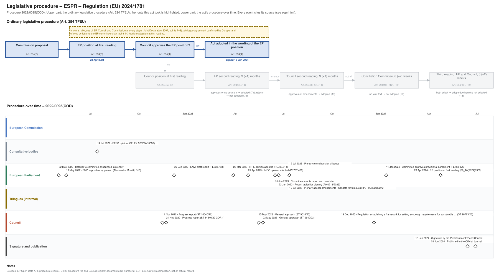

← All procedures · Regulation timeline
Procedure 2022/0095(COD), completed. Drawing: SVG · PNG · PDF (A3) · draw.io

| Date | Actor | Event | Document | Source |
|---|---|---|---|---|
| 2022-05-02 | European Parliament | Referral to committee announced in plenary | EP Open Data API, procedure 2022-0095 (REFERRAL) | |
| 2022-05-16 | European Parliament | ENVI rapporteur appointed (Alessandra Moretti, S-D) | EP Open Data API, procedure 2022-0095 (participation RAPPORTEUR) | |
| 2022-07-14 | Consultative bodies | EESC opinion | CELEX 52022AE0598 | Cellar procedure file 2022/95 |
| 2022-11-14 | Council | Progress report | ST 14540/22 | Cellar procedure file 2022/95 (Council register) |
| 2022-11-21 | Council | Progress report | ST 14540/22 COR 1 | Cellar procedure file 2022/95 (Council register) |
| 2022-12-06 | European Parliament | ENVI draft report | PE738.753 | EP Open Data API, procedure 2022-0095 (COMMITTEE_TABLING_REPORT) |
| 2023-03-28 | European Parliament | ITRE opinion adopted | PE738.514 | EP Open Data API, procedure 2022-0095 (COMMITTEE_ADOPTING_OPINION) |
| 2023-04-25 | European Parliament | IMCO opinion adopted | PE737.400 | EP Open Data API, procedure 2022-0095 (COMMITTEE_ADOPTING_OPINION) |
| 2023-05-15 | Council | General approach | ST 9014/23 | Cellar procedure file 2022/95 (Council register) |
| 2023-05-23 | Council | General approach | ST 9649/23 | Cellar procedure file 2022/95 (Council register) |
| 2023-06-15 | European Parliament | Committee adopts report and mandate | EP Open Data API, procedure 2022-0095 (COMMITTEE_ADOPTING_REPORT) | |
| 2023-06-22 | European Parliament | Report tabled for plenary | A9-0218/2023 | EP Open Data API, procedure 2022-0095 (TABLING_PLENARY) |
| 2023-07-12 | European Parliament | Plenary refers back for trilogues | EP Open Data API, procedure 2022-0095 (PLENARY_REFER_COMMITTEE_INTERINSTITUTIONAL_NEGOTIATIONS) | |
| 2023-07-12 | European Parliament | Plenary adopts amendments (mandate for trilogues) | P9_TA(2023)0272 | EP Open Data API, procedure 2022-0095 (PLENARY_AMEND) |
| 2023-12-19 | Council | Regulation establishing a framework for setting ecodesign requirements for sustainable … | ST 16723/23 | Cellar procedure file 2022/95 (Council register) |
| 2024-01-11 | European Parliament | Committee approves provisional agreement | PE758.076 | EP Open Data API, procedure 2022-0095 (COMMITTEE_APPROVE_PROVISIONAL_AGREEMENT) |
| 2024-04-23 | European Parliament | EP position at first reading (Art. 294(3) TFEU) | P9_TA(2024)0303 | EP Open Data API, procedure 2022-0095 (PLENARY_AMEND_PROPOSAL) |
| 2024-06-13 | Signature and publication | Signature by the Presidents of EP and Council | EP Open Data API, procedure 2022-0095 (SIGNATURE) | |
| 2024-06-28 | Signature and publication | Published in the Official Journal | EP Open Data API, procedure 2022-0095 (PUBLICATION_OFFICIAL_JOURNAL) |
| Date | Document | Kind | Subject |
|---|---|---|---|
| 2022-07-14 | CELEX 52022AE0598 | opinion | Opinion of the European Economic and Social Committee on the communication from the Commission to the European Parliament, the Council, the European Economic … |
| 2022-11-09 | PE738.514 | ep-draft-opinion | DRAFT OPINION on the proposal for a regulation of the European Parliament and of the Council on Establishing a framework for setting ecodesign requirements for … |
| 2022-11-10 | PE737.400 | ep-draft-opinion | DRAFT OPINION on establishing a framework for setting ecodesign requirements for sustainable products and repealing Directive 2009/125/EC |
| 2022-11-14 | ST 14540/22 | council-progress-report | Progress report |
| 2022-11-21 | ST 14540/22 COR 1 | council-progress-report | Progress report |
| 2022-12-06 | PE738.753 | ep-draft-report | DRAFT REPORT on the proposal for a regulation of the European Parliament and of the Council establishing a framework for setting eco-design requirements for … |
| 2023-03-31 | PE738.514 | ep-opinion | OPINION on the proposal for a regulation of the European Parliament and of the Council on Establishing a framework for setting ecodesign requirements for … |
| 2023-04-27 | PE737.400 | ep-opinion | OPINION on the proposal for a Regulation of the European Parliament and of the Council establishing a framework for setting ecodesign requirements for … |
| 2023-05-15 | ST 9014/23 | council-position | General approach |
| 2023-05-23 | ST 9649/23 | council-position | General approach |
| 2023-06-22 | A9-0218/2023 | ep-report | REPORT on the proposal for a regulation of the European Parliament and of the Council establishing a framework for setting eco-design requirements for … |
| 2023-07-12 | P9_TA(2023)0272 | ep-position | Ecodesign Regulation |
| 2023-12-19 | ST 16723/23 | agreed-text | Regulation establishing a framework for setting ecodesign requirements for sustainable products and repealing Directive 2009/125/EC - Analysis of the final … |
| 2023-12-22 | PE758.076 | agreed-text | PROVISIONAL AGREEMENT RESULTING FROM INTERINSTITUTIONAL NEGOTIATIONS Proposal for a regulation of the European Parliament and of the Council establishing a … |
| 2024-04-23 | P9_TA(2024)0303 | ep-position | Ecodesign Regulation |
{kind=link}
{kind=link}